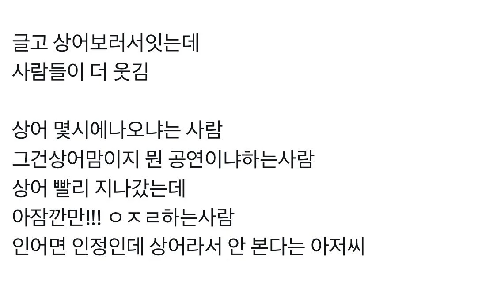

공연보러왔냐 ㅋㅋㅋ

공연보러왔냐 ㅋㅋㅋ
원래 좆병신특징이 긁히면 반박은 딱히 못하고 욕만함
보통 직업없고 돈없고 아무것도 없는 애들이 그러더라
난 다 이해한다 세상 만사에 시니컬한 이유가 뭔지ㅋㅋㅋㅋㅋㅋㅋㅋㅋㅋㅋ
평생 섹스못하고 뒤지는 수컷개구리도 우렁차게 울고나서 뒤질텐데 하는거라곤 그저 남욕과 심드렁한 태도로 일관하다 뒤지는 삶
개구리보다 못한 인생
남욕을 했냐 병신아ㅋㅋㅋㅋㅋㅋㅋㅋ 이런 존병신도 사회생활하는 한국에 감사하게 살아라 지이야기를 이렇게 일도 안하고 야스도 못한다고 투영하는 새끼들이 꼭 있더라ㅋㅋ 다 너님 인생같지 않단다ㅋㅋㅋ
고맙다 개붕아 4~5번 시니컬한 만화주인공마냥 난 굳이.. 이해안가는걸 하는거 개드립사람들 착해져서 차근차근 설명해도 시니컬 유지하는거 보고 열불 터질뻔했는데 니가 시원하게 긁어주는구나
이해안가는거ㅇㅋ
이해안간다고 가는사람들이병신이다 퍼뜨리는거 비정상
에버랜드가면 사자 코끼리 다있는데 아프리카 왜가겠누
3.5미터 상어 보는게 흔한일은 아니니깐
상어 몇시에 나오냐는 진짜 코메디네 ㅋㅋㅋ
5시 예정입니다
이게 웃김 ㅋㅋㅋㅋㅋㅋ
세이렌이냐 ㅋㅋ
마 상어 더불러라 새끼야
일단 위치가 좋더라. 부산역에서 도보 5분임
갔는데 민도개박살남
방송에서 5분마다 상어봤으면 30분내로좀 꺼지라고나옴
사진찍겠다고 죽어도안비킴
어떤 아줌마는 목에 핸드폰 두개걸고 찍고있더라
존나안비킴 오히려 젊은사람들은 눈으로보고 그냥 빠지고 아줌마-할머니가 존나안비킴
ㄹㅇ 그런 사람들은 해외여행 안갔으면 좋겠다 망신거리됨
그냥 니네는 통제받는걸 당연히 자연스러워 하는 것 뿐임
통제좀 당해라 남한테 피해주지말고;
그런게 자유면 그런 자유 개 좆만큼도 필요없지 ㅎㅎ 통제없는 자유는 방종일 뿐
안 본다는 아저씨는 왜 왔어 ㅋㅋㅋㅋㅋㅋㅋㅋ
그래도 궁금허다 안카요!
인어는 뭐여 ㅋㅋㅋㅋ
그래도 욕은 안써는데 애미뒤진찐따새끼야
꼭 이런 개병신때문에 욕을 쓰게 만들어요 좆병신새끼